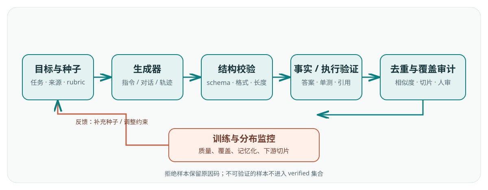

MODULE 21 / LLM DATA ENGINEERING
合成数据生成
合成数据不是“凭空制造更多文本”，而是把目标任务、生成器、验证器和分布监控组成一条可审计的数据生产线。
当真实语料稀缺、标签昂贵或长尾任务覆盖不足时，模型生成的数据能否补足训练分布？生成只是候选样本的来源；只有经过任务约束、独立验证、去重、覆盖审计和来源记录，候选数据才可能成为可用训练数据。
先区分合成数据的几种来源
合成数据（synthetic data）是由程序、模拟器、规则系统或生成模型构造出来的数据。它与“数据增强”有交集，但不完全相同：增强通常从已有样本出发做受约束变换；合成数据也可以从任务规格、知识库、形式化规则或模拟环境直接构造新样本。
- 指令自举：从少量种子任务出发，让模型生成新指令、输入与回答。Self-Instruct 的流程包含生成、无效样本过滤和相似样本过滤，再用筛选结果微调原模型。
- 指令演化：逐步改写已有指令，提高约束数量、推理深度或任务复杂度。WizardLM 的 Evol-Instruct 是代表；“更复杂”并不自动等于“更正确”。
- 教师生成与蒸馏：由能力更强或经过专门训练的教师模型生成候选答案，再用规则、执行器、专家或独立模型筛选。
- 环境交互与自博弈：在有明确状态、动作和奖励的环境中生成轨迹。只有环境反馈可验证时，轨迹才具有比自由文本自评更强的监督信号。
- 程序化合成：通过语法、约束求解器、仿真器或模板构造可控样本，适合边界条件、结构化输出和可执行任务。
这些方法的目标和训练阶段必须分开记录：预训练/继续预训练的合成语料、监督微调指令、偏好比较样本和强化学习轨迹不是同一种数据，也不能共享一套未经区分的质量指标。
把生成变成可审计的闭环

- 定义目标：明确目标能力、目标人群、输入输出 schema、允许的来源和禁止生成的内容。
- 准备种子：记录种子样本来源、许可、覆盖范围和难度；不要只用模型自己生成的样本启动闭环。
- 生成候选：保存模型版本、系统提示、采样参数、时间、随机种子和原始响应。
- 结构验证：检查 JSON/schema、字段类型、长度、必需字段和格式约束。
- 独立验证：数学题做独立求解或数值检验；代码运行编译、单元测试和边界测试；事实问答回到原始资料或可追溯知识库；不能让生成器自己给自己打分并把它当成真值。
- 去重、覆盖与抽检：同时检查精确重复、近似重复、任务覆盖、难度切片、语言切片和人工抽样；保存拒绝原因码，而不是只保留通过的数据。
用可解释的指标描述通过率
设生成器产生候选集合 。对每个样本 ，定义结构有效、内容可验证和新颖性三个布尔条件。保留数量应按逐样本联合条件计算，而不是假设各个通过率相互独立后简单相乘。
其中 表示结构有效， 表示通过任务相关验证， 表示满足新颖性策略。保留率只是产量指标，还应报告：
- 有效性：抽样人工复核后真正正确的样本比例及置信区间。
- 覆盖：任务、主题、难度、语言和边界情况的分布是否接近目标规格。
- 新颖性：与种子集、训练集和评测集的精确/近似重复率。
- 效用：固定训练预算、模型和评测协议下，加入样本后的下游增益与回归。
研究案例：Self-Instruct、Evol-Instruct 与 Phi-4
Self-Instruct
从模型生成的指令、输入和输出样本出发，再过滤无效或相似样本。论文报告的是其特定 GPT-3 微调设置和 Super-NaturalInstructions 评测，不应外推为所有任务都能获得同样收益。
阅读原论文 ↗WizardLM / Evol-Instruct
从种子指令出发，逐步增加复杂度，再将生成样本用于微调。复杂度扩展仍需正确性和可执行性验证，否则只是把错误包装得更复杂。
阅读原论文 ↗Phi-4 Technical Report
报告描述了 14B 参数 Phi-4，并明确称合成数据构成其训练数据的主体，生成方法包括多智能体提示、自我修订和指令反转。报告同时讨论了经过筛选的网页、代码和其他来源；不能将其简化成“只靠合成数据训练”。
arXiv 技术报告 ↗ · Microsoft Research PDF ↗模型坍缩：风险真实，但不要编造安全比例
Shumailov 等人在 Nature 2024 研究了递归使用模型生成数据训练后续模型的情形，指出模型可能逐代丢失原始分布的尾部信息，最终偏离真实数据分布。论文分析了统计近似、函数表达能力和学习过程误差等来源。
这不等于“所有合成数据都会导致模型坍缩”，也不支持一个对所有模型、语料和任务都适用的合成数据占比上限。风险取决于生成数据是否替代真实分布、尾部样本是否被保留、筛选器是否放大偏差，以及训练和评测是否持续监控分布变化。
较稳妥的治理方式是保留真实来源与原始分布快照、记录每一代数据的来源链、监控稀有主题和语言切片、对生成数据做来源去重，并用独立的真实数据评测集检查能力回归。
上线前的合成数据验收清单
- 生成目标是否写成可测试的任务契约？
- 提示词、模型版本、采样参数和种子是否留档？
- 是否有独立于生成器的事实或执行验证？
- 是否检查重复、覆盖、长尾和训练/评测泄漏？
- 人工抽检是否按风险分层，而不是只随机抽取容易样本？
- 数据集版本、拒绝原因、来源许可和隐私审查是否可追溯？
- 是否在固定训练预算下做消融，并报告负向结果？
参考资料
- Wang et al. Self-Instruct: Aligning Language Models with Self-Generated Instructions, ACL 2023.
- Xu et al. WizardLM: Empowering Large Language Models to Follow Complex Instructions, 2023.
- Abdin et al. Phi-4 Technical Report, 2024.
- Shumailov et al. AI models collapse when trained on recursively generated data, Nature 631, 755–759, 2024.